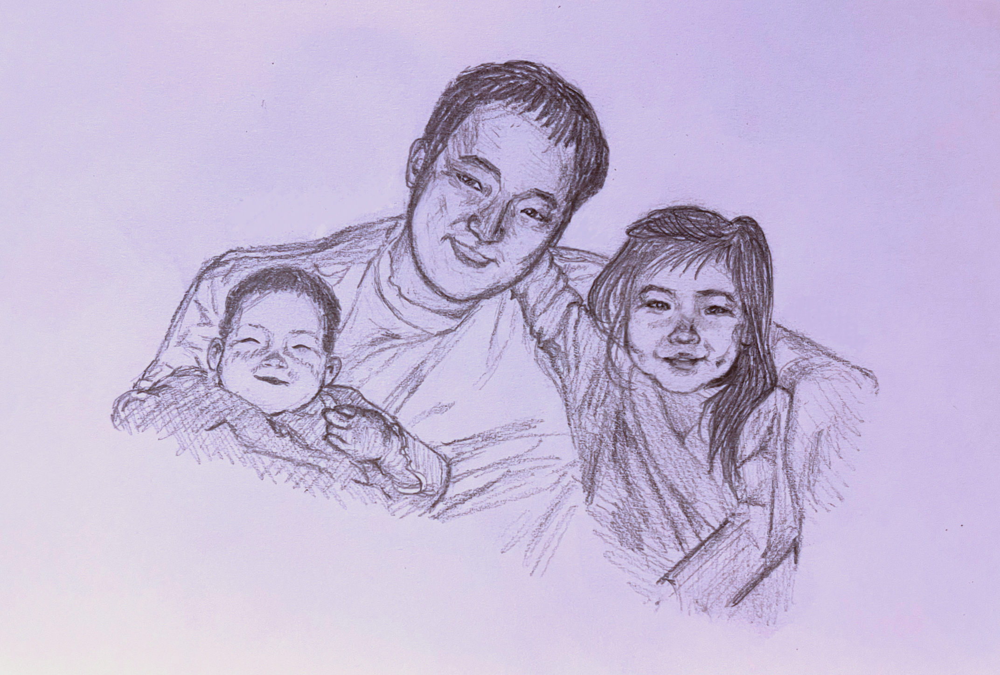
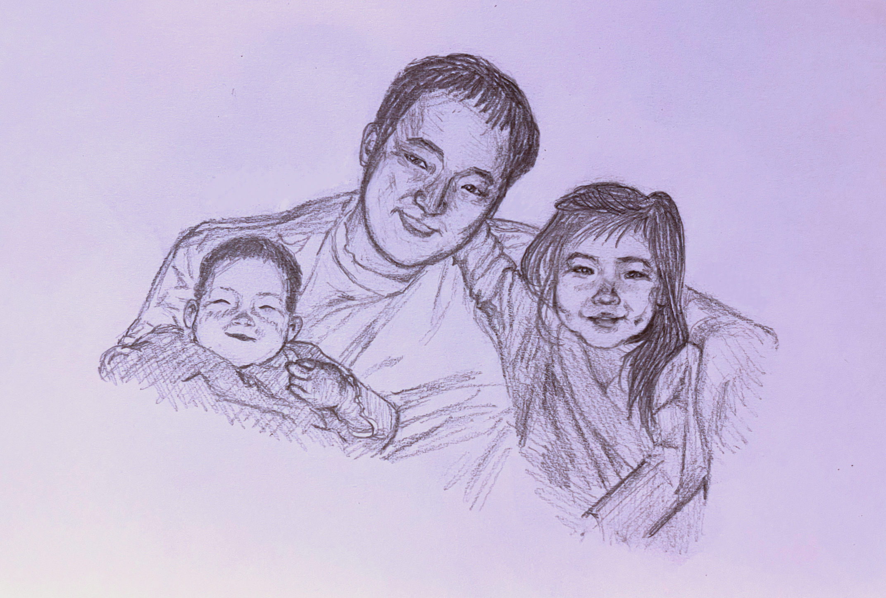

december 2023 graphite
 

summer 2023 pottery at catlin gabel


spring 2022 art and science of birds at cornell


digital


sharpie portraits


quiet watercolor, digital

orchid colored pencil, graphite, ink


medium: colored pencil

medium: watercolor

medium: graphite


medium: ink